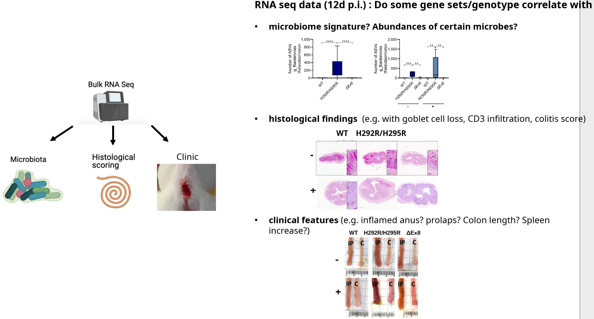
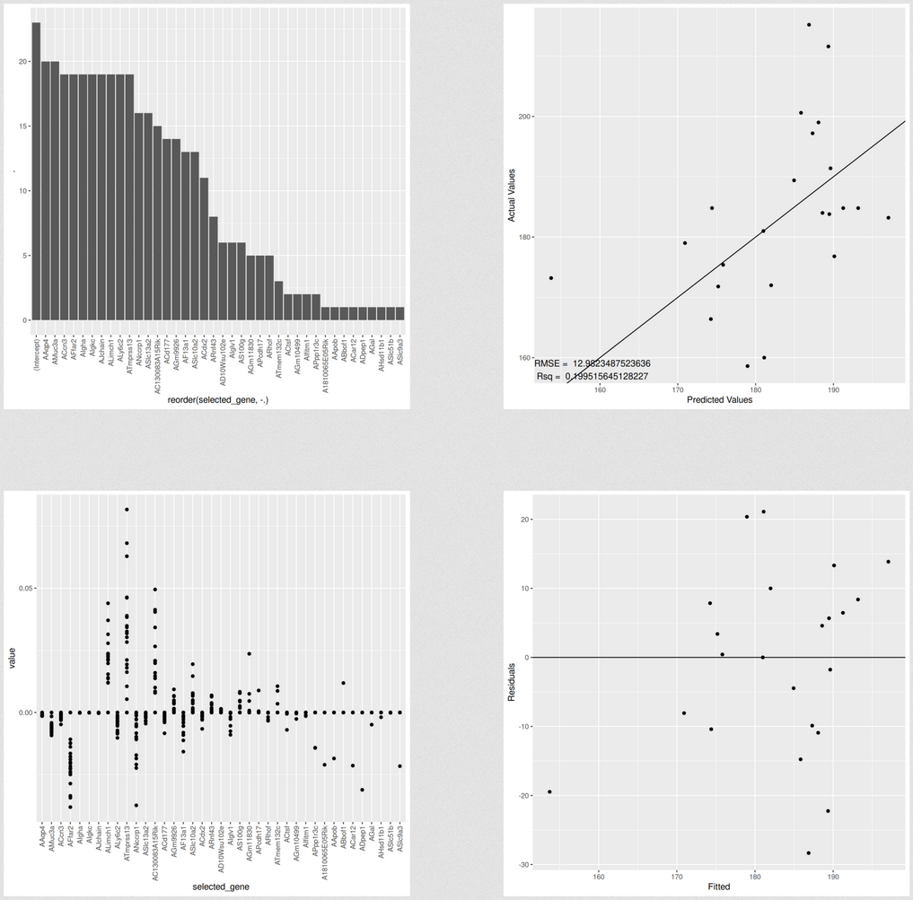
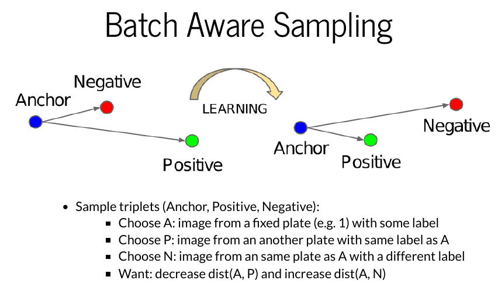
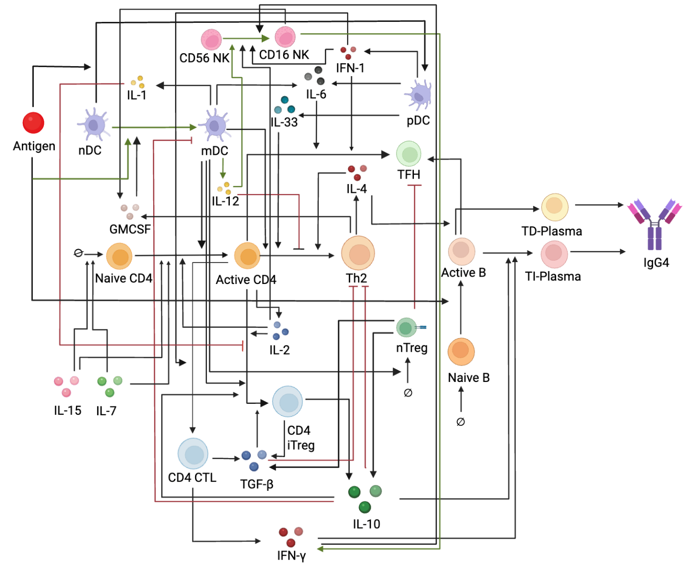

Intro
A bit about myself
- B.Sc. (Бакалавр) in Physics (Quantum Chemistry)
- M.Sc. (Магистр) in Mathematics (Biomathematics)
- Currently at Differentia Bio (Mathematical modeling of Immunology)
- Заманбап Мугалим программасынын катышуучусу
A bit about myself
- More in my blog: https://aidinbii.netlify.app/
Work projects (classical ML)

Work projects (classical ML)
- Goal: for a given variable determine
the important genes - Issue: small dataset (#genes \(\gg\) #samples)
high dimensional data - Approach: determine the most frequent genes which were selected by many trained models(CV)
Work projects (classical ML)
Example for one variable
- Train several (= #mice) generalized linear models (GLMs)
- For each trained model predict the value of the left out sample
- Count the selected genes (with nonzero coefficients)
Selecting a GLM model
- \(\min_{(\beta_0, \beta) \in \mathbb{R}^{p+1}}\frac{1}{2N} \sum_{i=1}^N (y_i -\beta_0-x_i^T \beta)^2+\lambda \left[ (1-\alpha)\|\beta\|_2^2/2 + \alpha\|\beta\|_1\right]\)
- To choose \(\alpha\) select the one with the best predictions (step 0.1)
- To choose best \(\lambda\) do another CV with parameter nfolds (\(\alpha\) is fixed)
Selecting a GLM model

Work projects (Deep Learning)
Work projects (Deep Learning)

Work projects (Modeling of immune system)

Logistics
- Syllabus, calendar, materials(website), communacation(telegram), google collab
- IMPORTANT: don't be afraid or shy to ask questions!
Advice
- You learn by doing. Can’t passively absorb the skill to code
- Play with the code. Experiment! Active learning!
- Do not be afraid to make mistakes!
- If you run into problems, try to think about what went wrong
- Google, StackOverflow, ChatGPT(LLMs) are your friends
- If you find yourself truly stuck, feel free to contact the team
Advice
PRACTICE. PRACTICE? PRACTICE!
Why learn to code when there are LLMs?
- Still need to understand code. Skills to assess & edit. Does it make sense? Is it optimal? How to improve?
- Analogy with a calculator: don't need to do the calculations yourself, yet need to understand what's happening(mechanism) and the answer
- I myself use LLMs. But it has little use if you don't understand the answer
- Treat it as a personal assistant. It can help you with your studies!
- Pros - you can get your questions answered
- Cons - it can be confidently wrong!
Why learn to code when there are LLMs?

Intro to DS